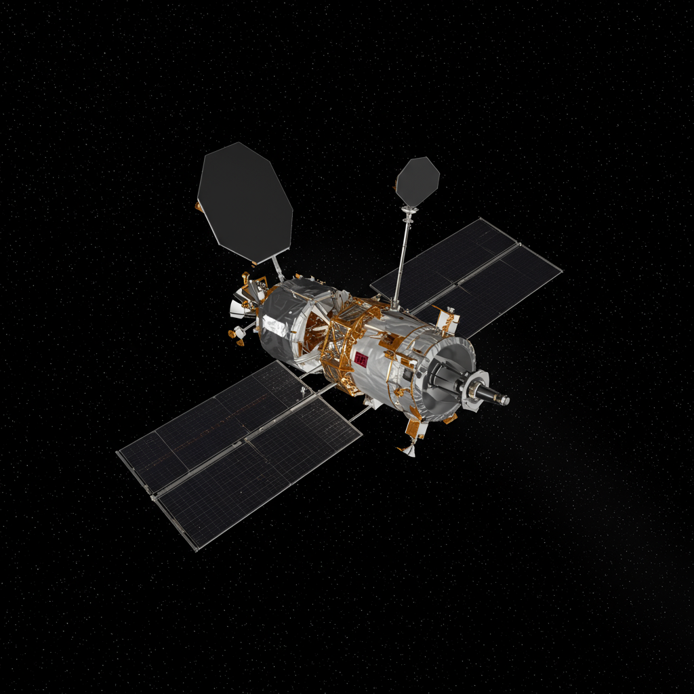

Kepler
Agencia: NASA
Fecha de lanzamiento: 7 de marzo de 2009
Duración de misión: 9 años (2009–2018)
Tipo de misión: Telescopio espacial para búsqueda de exoplanetas
Objetivo: Identificar planetas del tamaño de la Tierra en zonas habitables alrededor de otras estrellas
Carga científica: Fotómetro de alta precisión capaz de monitorear la luminosidad de más de 150,000 estrellas simultáneamente
Impacto histórico
La misión Kepler revolucionó la astronomía exoplanetaria al descubrir miles de exoplanetas y candidatos. Confirmó la existencia de mundos del tamaño de la Tierra en zonas habitables, demostrando que los planetas son comunes en la galaxia. Su legado continúa con misiones sucesoras que refinan y amplían su catálogo, transformando nuestra visión del cosmos y las posibilidades de vida más allá de nuestro sistema solar.
Significado del nombre
El telescopio Kepler fue nombrado en honor a Johannes Kepler, astrónomo y matemático alemán del siglo XVII, conocido por sus leyes del movimiento planetario. Su trabajo sobre órbitas elípticas fue esencial para la mecánica celeste y la búsqueda de exoplanetas, inspirando el objetivo de la misión de encontrar sistemas planetarios lejanos.
Estado actual
Kepler finalizó oficialmente sus operaciones en octubre de 2018 tras quedarse sin combustible. Aunque ya no está activo, su enorme base de datos continúa siendo analizada por astrónomos, produciendo nuevos descubrimientos y confirmaciones de exoplanetas hasta hoy.